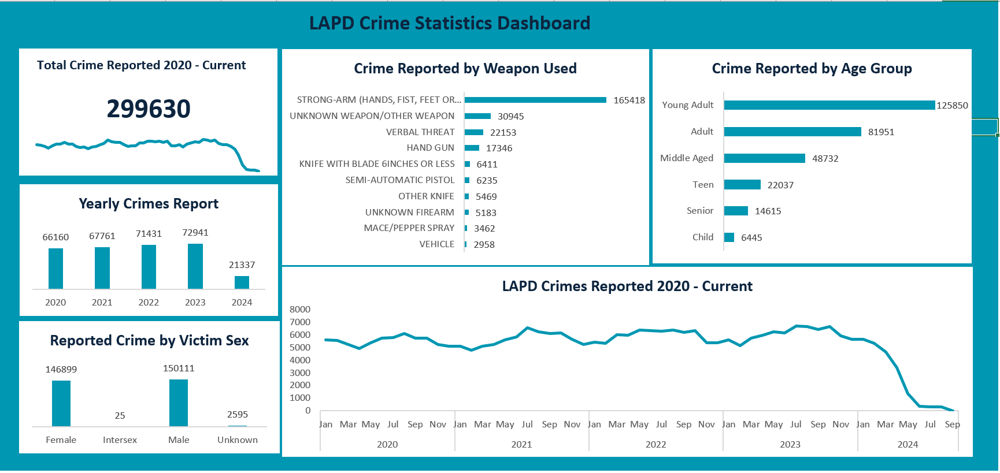
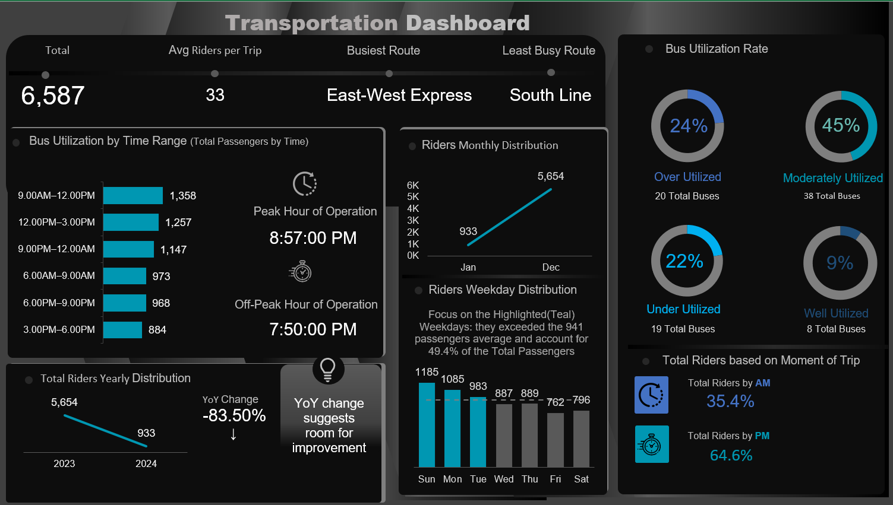
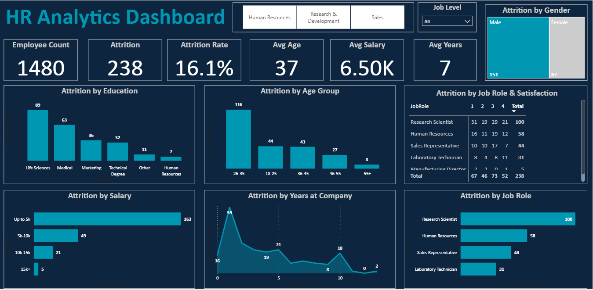
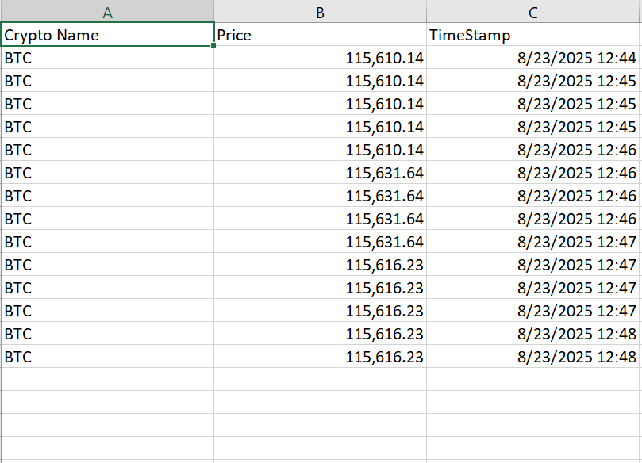
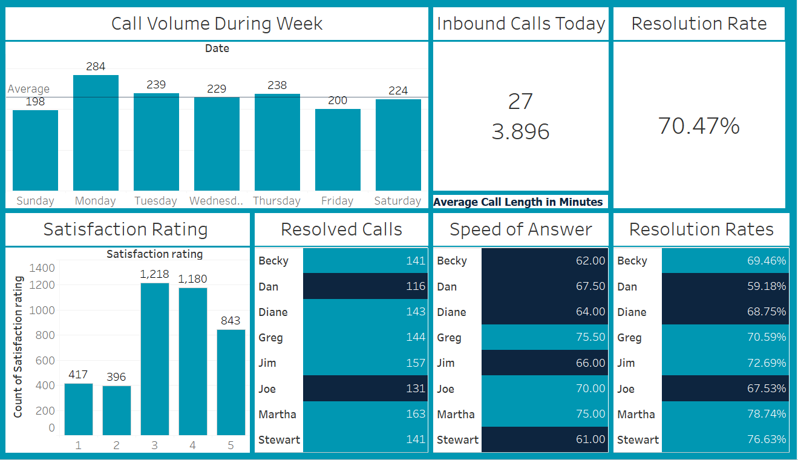

My Projects
LAPD Crime Statistics Automated Dashboard
Transformed raw LAPD crime data into a dynamic, interactive Excel dashboard. This project addresses the real-world challenge of turning complex data into actionable insights for strategic decision-making. By automating data updates and visualizing key trends, I created a powerful tool that helps monitor crime patterns, identify vulnerable groups, and inform public safety interventions. It’s a showcase of my skills in data analysis, visualization, and creating scalable solutions that solve genuine business problems.
Bus Transportation Analysis Dashboard
This project is an automated Excel dashboard that analyzes bus transportation trends and performance. Using Power Query and PivotTables, I transformed raw data into a dynamic, refreshable tool that reveals key insights on bus utilization, peak hours, and year-over-year changes. This project demonstrates my proficiency in building data models and creating automated, impactful dashboards for operational planning and resource optimization.
SQL Restaurant Performance Analysis

Performed SQL-based exploratory data analysis to optimize restaurant operations and menu strategies.
HR Analytics Dashboard — Power BI
This Power BI dashboard provides a comprehensive look at employee attrition. By analyzing patterns across age, salary, role, and tenure, the dashboard helps organizations understand who is leaving and why. This project highlights my ability to use data analytics to solve a critical business problem, turning raw HR data into actionable insights that inform retention strategies and improve workforce planning.
Automated Crypto Web Scraper — Python & CSV
A Python project that automates the collection of real-time Bitcoin prices from CoinMarketCap. The scraper stores data with timestamps, creating a historical dataset for market analysis and trend tracking. This project highlights my skills in web scraping, data automation, and problem-solving, showcasing how I turn repetitive manual work into an efficient, data-driven solution.
Movie Genres Data Analysis — Python & Jupyter

This project explores a movie dataset to uncover the trends and relationships that drive success in the film industry. Using Python, I analyzed genres, budgets, revenues, and popularity to understand what makes a movie a hit. This project showcases my ability to clean, analyze, and visualize data to generate strategic business insights.
Call Center KPI Dashboard — Tableau
This project is a Tableau-based dashboard that provides a comprehensive view of call center operations. It tracks key metrics like call volume, resolution rates, and customer satisfaction to help managers monitor performance and make data-driven decisions. This dashboard highlights my skills in business intelligence, data visualization, and creating solutions that improve operational efficiency and customer service.